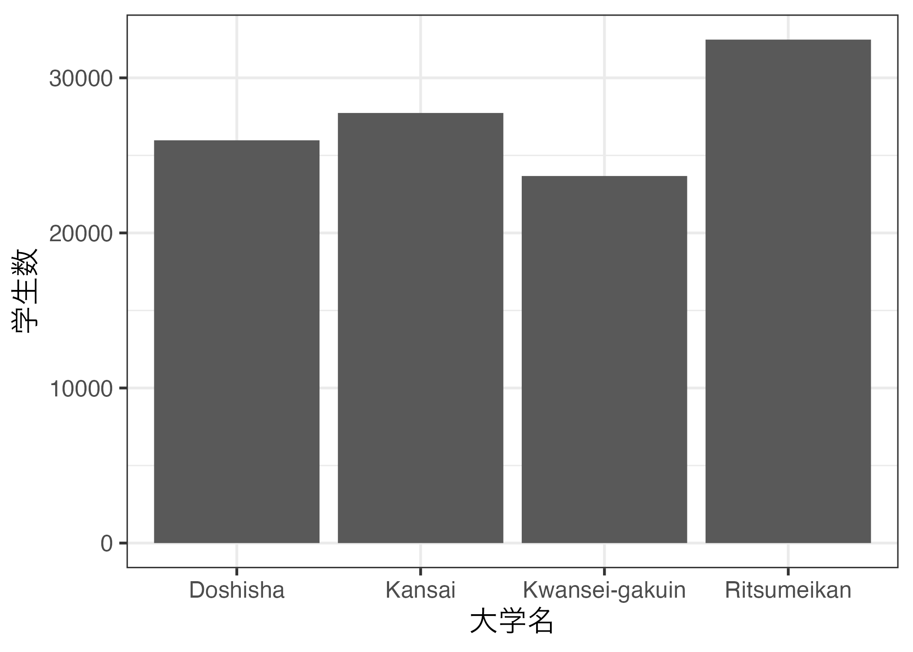
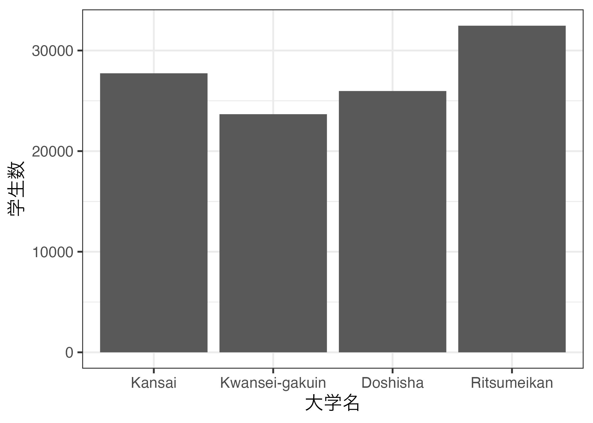

第7回講義資料
データ型
スライド
データ型とは
ベクトル（vector）はデータ構造（data structure）であり、ベクトル内の一つ一つの要素は数値や、文字など様々なデータ型（data type）の値を取り得る。
obj1: 長さ6の数値型ベクトルobj2: 長さ4の文字型ベクトルobj3: 長さ3の論理型ベクトルobj4: 長さ1の文字型ベクトル- 長さ1のベクトルは原子ベクトル（atomic vector）とも呼ばれる
他にもRには様々なデータ型が使える。以下のリストはRが提供するデータ型の一部であり、太字は本講義で紹介するデータ型である。ここでは説明を割愛するが日付型（Date型）もよく使われるデータ型であり、それそれの詳細は教科書第8章を参照されたい。
- Logical
- Numeric
- Complex
- Character
- Factor
- Date
- NA
- NULL
- NaN
- Inf
- その他
データ型の確認
ベクトル内の要素は全て同じデータ型を取るが、そのデータ型を確認するためには、class(ベクトル・オブジェクト名)関数を使用する。先ほど作成した4つのベクトルのデータ型を確認してみよう。
Logical型
論理型（logical型）とはTRUEとFALSEのみで構成されるデータ型である。論理演算子の計算結果は必ず以下のように論理型の結果が返される。
この結果を代入演算子（<-）を使って、オブジェクトに格納するとlogical型ベクトルが作業環境内に格納される。
あるオブジェクトがlogical型か否かを判定するにはis.logical()を使用する。
作成
Logical型ベクトルを作成するためには、通常のベクトルと同様、c()関数で作成する。
ここでのTRUEはT、FALSEはFと略すことが出来るが、推奨しない。必ずTRUEとFALSEで表記すること。
注意点
Logical型の値であるTRUEとFALSEを"で囲んではいけない。もし、一つでも"で囲んでしまうと、そのベクトルlogical型でなく、後ほど紹介するcharacter型へ変換される。
[1] "TRUE" "FALSE" "TRUE" "TRUE" "FALSE"使い方
直接TRUEやFALSEが格納されたベクトルを使う場面はほとんどない。つまり、ほとんどのlogical型ベクトルは何らかの論理演算子から返されたものである。以下の例は、my_vec1から奇数の要素のみを抽出するために、logi_vec5というベクトルを作成する例である。
Code 15
[1] TRUE FALSE TRUE FALSE FALSENumeric型
Numeric型の演算
以下ではnumeric型ベクトル同士の演算について解説する。Numeric型ベクトル同士は常に可能であるが、ベクトルの長さによって動きがやや異なる（ベクトル・リサイクル）。ベクトル・リサイクルは第3回にて解説したが、ここで改めて解説する。
ケース1: 同じ長さのベクトル同士の演算
2つのベクトルの長さが同じ場合、同じ位置の要素同士の演算となる。したがって、返ってくる結果（ベクトル）の長さは元のベクトルの長さと同じとなる。たとえば、長さ5の2つのベクトル同士の演算を考えてみよう。
Code 22
[1] 12 9 8 7 7 この場合、num_vec2の1番目の要素（1）とnum_vec3の1番目の要素（11）の足し算、num_vec2の2番目の要素（2）とnum_vec3の2番目の要素（7）の足し算、…が行われる。
ケース2: 長さ2以上 (A)と長さ1 (B)同士の演算
この場合、(A)のそれぞれ要素と(B)の要素同士で演算を行う。長さ5のベクトルに対し、たとえば長さ1のベクトルがc(10)であれば、自動的にc(10, 10, 10, 10, 10)へ変換されたと考えても良いだろう。
[1] 1.1 0.7 0.5 0.3 0.2ケース3: 長さ2以上と長さ2以上で長さが異なる場合
この場合、より短いの要素がリサイクルされる。長さ5のベクトルに対し、たとえば長さ3のベクトルがc(1, 2, 3)であれば、自動的にc(1, 2, 3, 1, 2)へ変換されたと考えても良いだろう。これをRでは「ベクトル・リサイクル」（vector recycle）と呼ぶ。ちなみに、この場合、警告が表示される場合もある。これは長い方のベクトルの長さが短い方の長さの倍数になっていない場合に出力される。しかし、計算そのものには問題がない。
注意点
Logical型と同じ理由でnumeric型の値を"で囲んではいけない。一つでも"で囲むとNumeric型でなく、Character型へ変換されてしまう。
[1] "38" "29" "10" "94" "51"Character型
Character型（文字型）は要素が"で囲まれたデータ型である。
[1] "Kansai" "Kwansei-gakuin" "Doshisha" "Ritsmeikan" 文字列の長さ
文字列ベクトルの長さを求める場合はlength()関数を使用する。
ただし、length()関数はベクトルの長さを求める関数であって、各要素の文字数を求める関数ではない。各要素の文字数を求める場合はnchar()関数を使用する。
文字の結合
本講義では使うことはほとんどないものの、頻繁に使う関数としてpaste()関数（またはpaste0()関数）がある。これは2つの文字列を結合する関数であり、使い方はpaste(Character型ベクトル, Character型ベクトル)である。
ケース1: char_vec1の全要素の後に"University"を付ける。
[1] "Kansai University" "Kwansei-gakuin University"
[3] "Doshisha University" "Ritsmeikan University" この場合、大学名（たとえば、"Kansai"）と"University"の間には自動的にスペースが入る。スペースを無くしたい場合は、paste()内にsep = ""を追加するか、paste0()関数を使用する。このsep引数は結合される2つの文字列の間に入る文字を意味し、デフォルトはスペース（" "）である。
[1] "KansaiUniversity" "Kwansei-gakuinUniversity"
[3] "DoshishaUniversity" "RitsmeikanUniversity" [1] "KansaiUniversity" "Kwansei-gakuinUniversity"
[3] "DoshishaUniversity" "RitsmeikanUniversity" [1] "Kansai-University" "Kwansei-gakuin-University"
[3] "Doshisha-University" "Ritsmeikan-University" ケース2: char_vec2の全要素の前に1、2、…を付け、数字と大学名は"."で結合
結合する2つのベクトルの長さがいずれも2以上の場合、同じ位置の要素同士の結合となる。
Factor型
Factor型は見た目上はcharacter型と同じであるが要素に順番（順位）が付いている点で異なる。つまり、factor型は順序付きcharacter型とも言えよう。
以下の2つの表形式データの内容は全く同じものである。しかし、左の表の場合大学名列のデータ型はcharacter型（列名の下に<chr>と表示される）、右の表の場合はfactor型（列名の下に<fct>と表示される）である。Factor型変数は要素の順番（順位）が決まっていて、ここでは"Kansai" > "Kwansei-gakuin" > "Doshisha" > "Ritsumeikan"の順番で設定してある。
大学名がcharacter型の場合
# A tibble: 4 × 2
大学名 学生数
<chr> <dbl>
1 Kansai 27736
2 Kwansei-gakuin 23671
3 Doshisha 25974
4 Ritsumeikan 32467大学名がfactor型の場合
# A tibble: 4 × 2
大学名 学生数
<fct> <dbl>
1 Kansai 27736
2 Kwansei-gakuin 23671
3 Doshisha 25974
4 Ritsumeikan 32467この見た目上は全く同じの2つのデータを使って、大学別学生数の棒グラフを作成した例が以下の図である。

大学名がcharacter型の場合
大学名がfactor型の場合このようにcharacter型だと、作図の際、大学がアルファベット順で並ぶものの、factor型であれば、予め決めておいた順番で並ぶ。Factor型は図表を作成する際に重宝されるデータ型である。
Factor型の作成
ここでは、既存のcharacter型ベクトルをfactor型に変換する方法について紹介する。以下のchar_vec4は関関同立の名前をアルファベット順で格納した長さ4のcharacter型ベクトルである。
Factor型ベクトルはfactor()関数で作成する。第一引数は元となるcharacter型ベクトルであり、levels引数に要素の順位を付ける。
[1] Doshisha Kansai Kwansei-gakuin Ritsumeikan
Levels: Kansai Kwansei-gakuin Doshisha Ritsumeikanこのようにfactor型ベクトルを出力した場合、ベクトルの中身に加え、下段に要素の順位が表示され、図表を作成する際はこの順番で自動的にソートされる。
Factor型の詳細
このfactor型は非常に重要なデータ型であり、図表を作成する際には必ず考えなくてはならないものである。先ほどの例のように、文字列をfactor化しないと要素はアルファベット順になる。図表において順番が思い通りにならない原因は、factor化していない、またはfactor化が間違っているのがほとんどである。factor型については今後データハンドリング、可視化の講義で改めて解説する。
欠損値
データ分析において頻繁に遭遇するのはNAであるが、これは欠損値（missing value）を意味する。欠損値は何らかの値があるはずであるものの、観察されていない値である。例えば、国連開発機構が毎年発表している「人間開発指数（Human Development Index; HDI）」では世界各国のデータが含まれている。しかし、世界における全ての国のデータが入っているわけではなく、たとえば台湾や北朝鮮のデータは含まれていない。これらの国/地域に人間開発という概念がないわけではなく、なんらかの理由（今回は政治的な理由）で値が欠損しているだけである。
自分でデータセットを構築しようとする時に、特定のケースに欠損が生じるケースは多々あり、世論調査でも例外ではない。たとえば答えづらい質問に対して「わからない」や「答えたくない」を選んだ場合、その回答者における当該質問は欠損となる。このように多くのデータには欠損値が含まれているため、欠損値処理は非常に重要である。欠損値の処理には様々な方法があるが、本講義では欠損値が含まれたケースを除外した分析を行う予定である。
他にも計算上、何らかの問題を生じさせうるものはあるが、以下では簡単にその例を紹介する。ただし、NaNとInfのベクトルを作ることは可能であるが、使う機会はほとんどなく、何かの計算の結果によって返ってくるケースが多いので、その意味さえ把握しておけば良い。
NA: 何らかの値があるはずだが、欠損している状態NULL: そもそも存在しないNaN: 計算不可（例: 0 \(\div\) 0）Inf: 無限大（例: 10 \(\div\) 0）
NAとNULLの違い
値がないという点でNAとNULLは似ているように見えるが、実は全く異なる概念である。NAは要素としてカウントされるが、NULLはカウントされない。以下の例を見てみよう。
このようにNULLはそもそも存在しないことを意味する。NAが入居者がいない空き部屋であれば、NULLはそもそも部屋が存在しないことを意味する。ここまでの話だとNULLの存在意義が疑われるだろうが、中級者以上になるといずれ使う機会があろう。
欠損値を含むベクトルの計算
ベクトルに欠損値が含まれている場合、平均値（mean()）、標準偏差（sd()）などの計算ができず、以下のように結果としてNAが返ってくる。
ここで欠損値を以外の要素のみを使って計算する方法としては以下の2つの方法がある1。
方法1: データから欠損値を除外する。
!演算子は否定を意味する（第3回参照）- ちなみに、
NA_vec == NA、NA_vec != NAは使用不可
方法2: 関数内にna.rm = TRUEを追加する。
mean()関数の場合、na.rmという引数が用意されており、これをTRUEにすると、欠損値を除外した平均値が求められる（既定値はFALSE）。通常、関数には様々な引数が用意されている。Rコンソール上で?関数名を入力するとヘルプが読める（mean()関数のヘルプは?meanで読める）。
ベクトル操作（続）
今回はデータ型が主な内容であったが、ベクトル操作はこれからも必要となるため、以下では第3回に続き、ベクトルの操作方法について解説する。練習用のベクトルとしてmy_vec2を用意する。
要素の追加
ベクトルに新しい要素を追加するためにはベクトル名[追加したい位置] <- 追加する値と入力する。たとえば、my_vec2の5番目の要素として0を追加する場合は以下のように入力する。
複数の要素を入れることができる。my_vec2の6、7、8番目の要素として、-1、-2、-3を追加する場合、以下のように入力する。
今、my_vec2の長さは8である。もし、このmy_vec2の11番目の要素としてに10を入れたらどうなるだろうか。
このように11番目に10が追加され、9、10番目の要素は欠損値（NA）になる。
要素の置換
要素の置換は要素の追加と同じである。つまり、ベクトル名[置換したい位置] <- 置換する値と入力する。my_vec2の11番目の要素は10であったが、これを-6に置換する。
要素の追加と同様、複数の要素を置換することもできる。ここではmy_vec2の9、10番目の要素（NAとNA）を-4、-5に置換してみよう。
置換する位置を指定する[]内に論理演算子を使えば、条件に合致する要素のみ置換することができる。たとえば、my_vec2の要素の中で、0より小さい要素に-1を掛けて置換する場合、以下のように入力する。
教科書
- 『私たちのR: ベストプラクティスの探求』
- 「データ型」
注
欠損値を統計的処理を用いて補完することもでき、これを「多重代入法（multiple imputation）」と呼ぶ。↩︎